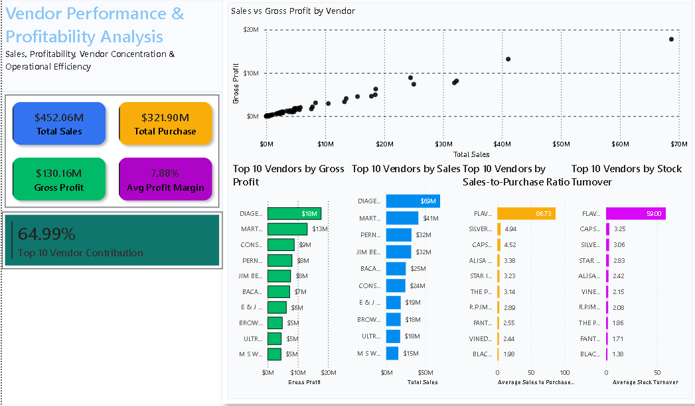

Vendor Performance & Profitability Analysis
Python (Pandas) · SQL (SQLite/MySQL) · Power BI
Analyzed a large-scale vendor transaction dataset to evaluate sales performance, profitability, operational efficiency, and sales concentration.
Performed data preparation and exploratory analysis using Python and Pandas, developed SQL-based analytical datasets, and built an interactive Power BI dashboard to communicate business performance and operational insights.